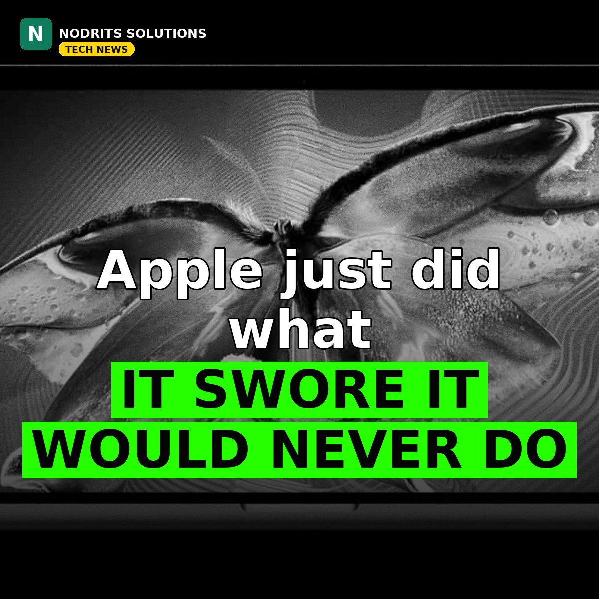

Apple Just Did What It Swore It Would Never Do: The First Touchscreen MacBook Pro Is Here

For years, Apple insisted a touchscreen had no place on a Mac. On October 28, 2026, at its "Pro and tell" event in Los Angeles, the company broke that rule in spectacular fashion: the new MacBook Pro with PROLED XDR Display is the first Mac you can tap, swipe and pinch directly on the screen.
What happened
Apple unveiled a redesigned MacBook Pro in 14-inch and 16-inch sizes, built around a new tandem OLED panel it calls PROLED XDR. The touch sensor is built directly into the display panel rather than layered on top, which Apple says cuts latency. You can scroll webpages, pinch to zoom on photos, drag slides between presentations and resize windows with your fingers — while the keyboard and trackpad keep working exactly as before. The familiar notch is gone too, replaced by the iPhone's Dynamic Island, appearing on a Mac for the first time.
The display itself is the headline act. Two self-illuminating OLED layers deliver up to 2,000 nits of peak brightness for both HDR and regular content, 1,000 nits across the full screen, a 10,000,000:1 contrast ratio, and a ProMotion refresh rate that shifts between 10Hz and 120Hz. Colour coverage now spans both P3 and Adobe RGB, with reference modes for film, photography, print and medical imaging. "PROLED XDR is the world's best laptop display," said Johny Srouji, Apple's chief hardware officer.
Under the hood sit M5 Pro or M5 Max chips, with up to 128GB of unified memory and storage up to 16TB. The machines are thinner and lighter than before — the 14-inch model weighs 3 pounds, the 16-inch 4 pounds — with up to 24 hours of battery life, three Thunderbolt 5 ports, HDMI, an SDXC slot, MagSafe, Wi-Fi 7, Bluetooth 6 and a 12MP Center Stage camera. They ship with macOS 27, which Apple calls Golden Gate. A redesigned hinge keeps the screen steady while you tap it, and the camera feed auto-stabilises if you touch the screen mid-call.
Pricing starts at $2,899 for the 14-inch model with M5 Pro, $3,399 for the 16-inch M5 Pro, $4,499 for the 14-inch M5 Max and $4,799 for the 16-inch M5 Max. Pre-orders opened on October 28 in 30 countries and regions, with availability from Friday, November 6.
Why it matters
This is a separate, bigger move than the 14-inch MacBook Pro with M6 that Apple announced just a day earlier. That $1,999 model keeps the Liquid Retina XDR screen and has no touch at all — the PROLED models are a different machine for a different buyer. Apple CEO John Ternus told Wired the Mac remains "first and foremost an indirect input device, built around the trackpad and keyboard," but that the company waited until adding touch "didn't make it heavier" or "thicker" — and the OLED screen finally made that possible.
The timing matters for the whole laptop market. Windows laptops have had touchscreens for over a decade; Apple holding out was one of the industry's longest-running design stances. Its reversal signals that touch is now expected even at the professional top end — and that display technology, not philosophy, was the real blocker.
What it means for you
If you grade video, edit photos for print or draw on screen, the PROLED model is the one to look at: Adobe RGB coverage, the contrast ratio and direct pen-style interaction are things the $1,999 M6 model cannot offer. Apple's own Creator Studio apps get touch features first — Pixelmator Pro lets you draw on the canvas, Logic Pro adds a Multi-Touch keyboard, Final Cut Pro lets you pinch to zoom on a cut — while third-party apps such as Microsoft Word, Adobe Lightroom, DaVinci Resolve and Blender add touch support later this year.
If you mostly write, code, browse and edit casually, the M6 model delivers the same battery life for $900 less. And if touch is your main reason to buy, it may be worth waiting for reviews: many third-party touch apps are not due until later this year, and everyday macOS touch behaviour is still unproven.
The Nodrits take
Apple spent years arguing that touch on a laptop was a compromise. The moment the display technology caught up, the argument disappeared — a useful reminder that "never" in tech usually means "not yet." The real question is whether macOS touch feels as natural as Apple claims, or whether it ends up as a feature you use twice and forget. Would you pay $2,899 for a Mac you can touch — or is the $1,999 M6 model the smarter buy? Tell us in the comments.
Need a website, SaaS product or AI workflow built right?
Nodrits Solutions designs, develops and automates for businesses in Pakistan, the USA, UK, UAE and Saudi Arabia.
Talk to Nodrits →Sources: Apple press release (via MacObserver); MacRumors; Pocket-lint; The Verge "Pro and tell" live blog; Times of India. Published October 29, 2026.